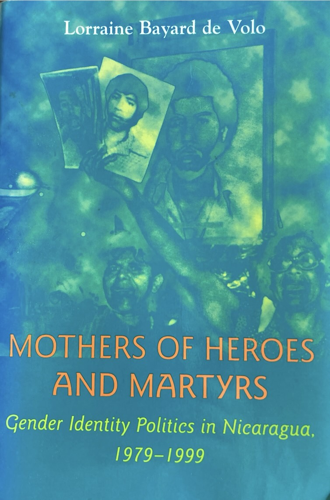
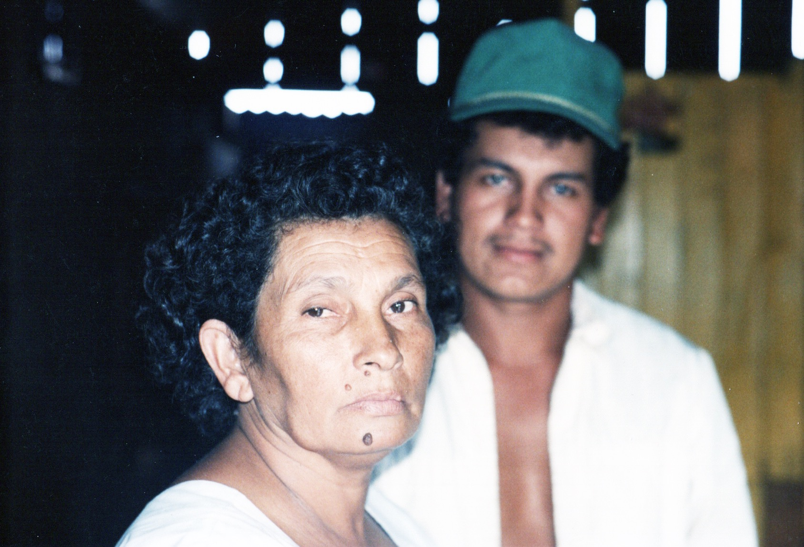
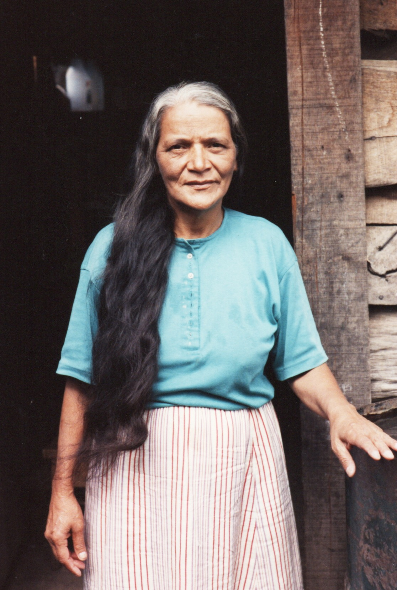
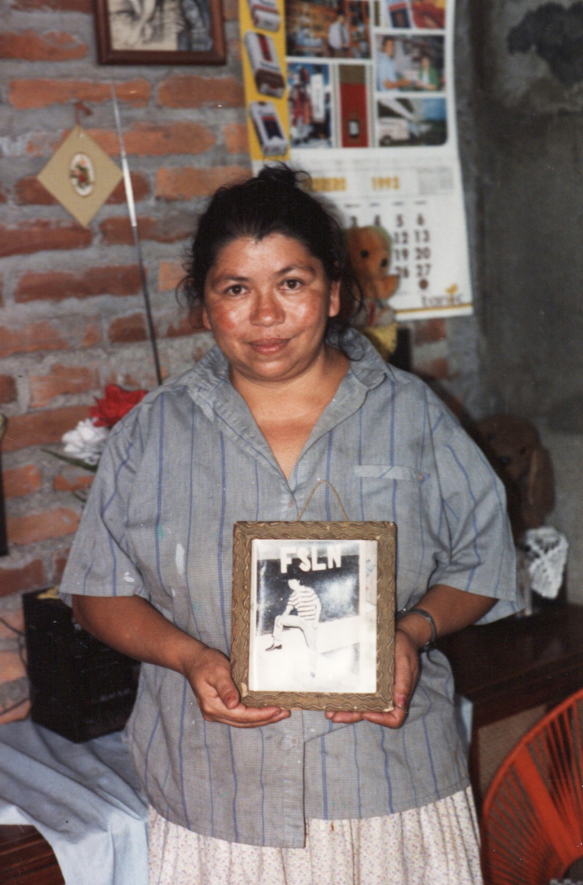
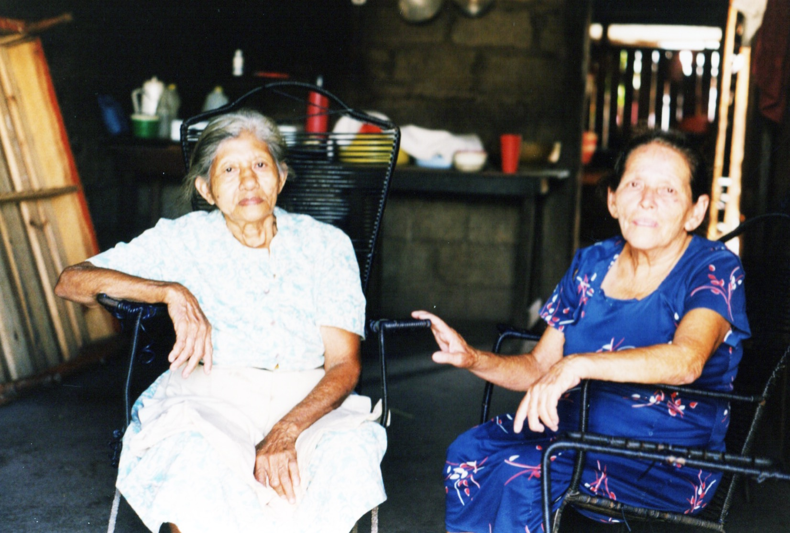
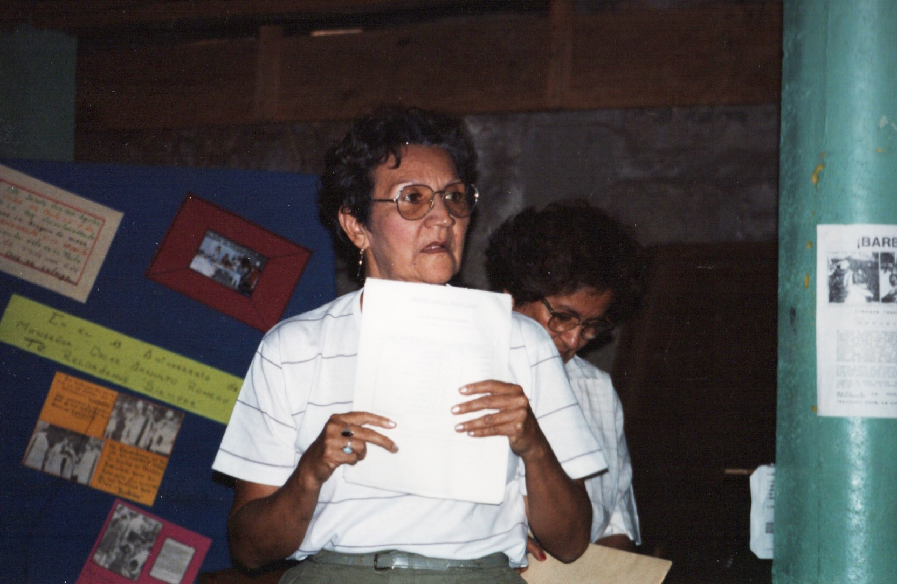
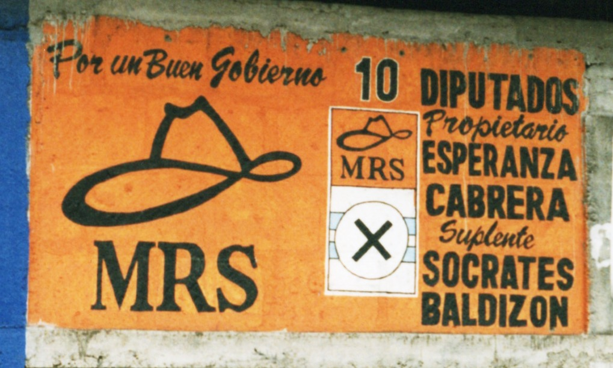

Professor, Department of Sociology | University of Colorado Boulder
My research on Nicaragua draws on a decade of ethnographic fieldwork, archival research, interviews with political actors and movement participants, and oral histories. The fieldwork spans the final year of the Contra War and the postwar years of neoliberalism, while oral histories and archival research extend the analysis back to the Sandinista armed insurrection and revolutionary period of the late 1970s and 1980s. Situated at the intersection of political science, sociology, gender studies, and history, this work examines how revolution, the revolutionary state, and war shaped—and were shaped by—gender identities, maternal symbolism, and women’s political mobilization during and after the 1979 Sandinista revolution.

Mothers of Heroes and Martyrs: Gender Identity Politics in Nicaragua, 1979–1999
Johns Hopkins University Press, 2001
In Mothers of Heroes and Martyrs: Gender Identity Politics in Nicaragua (1979–1999) (Johns Hopkins University Press, 2001), I show that, despite the prominence of the Sandinista “guerrilla girl” in popular and academic accounts, women were mobilized primarily as mothers, with that representation shifting in relation to the state’s military needs. Early in the Contra War, the Sandinista state celebrated Combatant Mothers, armed to defend their children and the nation. Later, as casualties rose and the state imposed a draft, it instead hailed women as Mothers of Combatants, ready to send their sons to war. At the same time, I examine how women understood their activism during the war and under postwar neoliberal adjustment, showing that maternal identities both empowered them and drew them into sustained political engagement, even as they redirected them away from conventional feminist priorities. In doing so, the book demonstrates the centrality of gender in armed insurrection and warfare and contributes to social movement theory by showing how emotional support, collective identity, and empowerment can function as lasting benefits of activism across changing political and economic contexts.
How did the Sandinista state deploy images of grieving and heroic motherhood to consolidate political support? And how did real mothers — organized into a national movement — respond to, inhabit, and resist these representations?
The Sandinista revolution produced significant openings for women's political participation, yet also reproduced gendered hierarchies within the revolutionary movement. This tension between liberation and constraint runs through much of my Nicaraguan work.
Following the 1990 electoral defeat of the FSLN, my research tracks how women's organizations and the mothers' movement adapted to — and shaped — the post-revolutionary political landscape across the 1990s.
My Nicaragua research is grounded in long-term ethnographic fieldwork, oral histories, and archival sources. I reflect throughout on the politics of research relationships and the methodological challenges of studying politically charged communities.

Member of the Mothers of Heroes and Martyrs, at home with her son in Matagalpa.

Another Mother, at her home in Matagalpa.

Mother, with a photo of her son who died in the Contra War.

Two members who lived in Barrio Juan XXIII, a neighborhood built as a project of the Mothers of Matagalpa for members who were displaced by the Contra War.

Director of the Mothers, Doña Esperanza Cruz de Cabrera, leading a meeting.

Esperanza Cabrera, director of the Mothers of Matagalpa, ran as an MRS candidate for National Assembly in 1996.